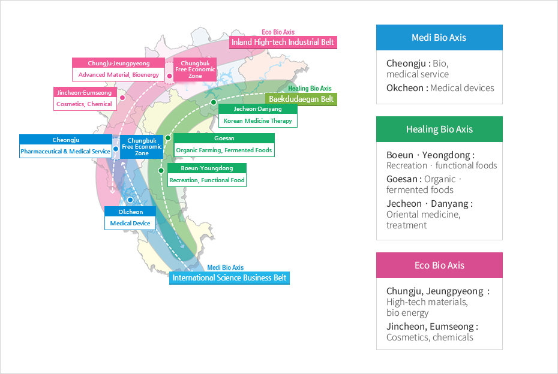

Bio Industry
- Home
- Business Opportunities
- Bio Industry
3·3·7 BioValley Project
In a bid to be one of the world’s top 3 BioValleys, Chungbuk is actively nurturing 3 development axes with 7 strategic districts.


- Medi Bio Axis
- Cheongju : Medical and pharmaceutical · service
- Okcheon : Medical devices
- Healing Bio Axis
- Boeun · Yeongdong : Recreation · functional foods
- Goesan : Organic · fermented foods
- Jecheon · Danyang : Oriental medicine, treatment
- Eco Bio Axis
- Chungju · Jeungpyeong : High-tech materials bio energy
- Jincheon · Eumseong : Cosmetics · chemicals